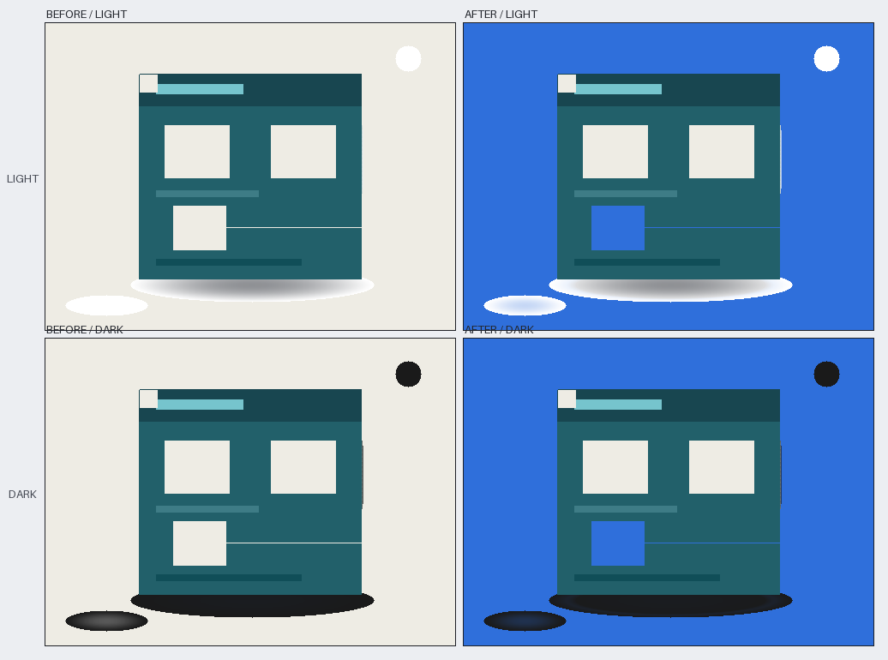
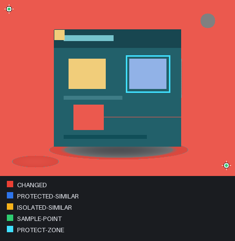
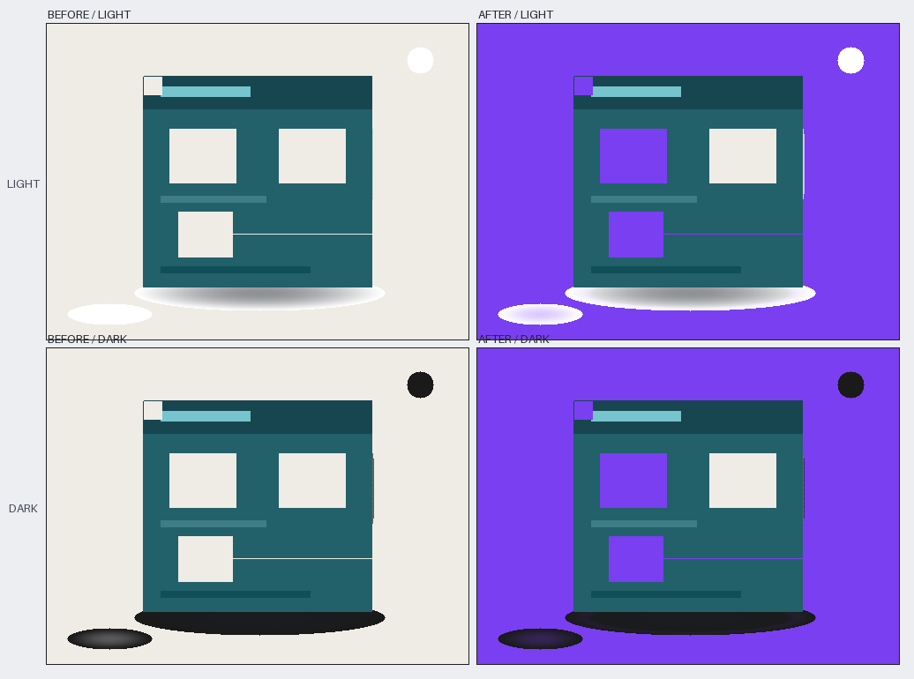
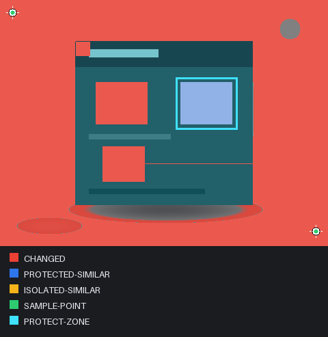

| 总像素 | 172800 |
| 完全透明（不计外观统计） | 846 |
| 半透明像素 | 8071 |
| 不透明像素 | 163883 |
| 实际变化像素 | 108769 |
| 其中半透明边缘变化 | 3903 |
| 受保护相似像素 | 4712 |
| 断开同色像素 / 域数 | 5153 / 3 |
| 可见像素平均 RGB 前→后 | [172.3, 188.19, 185.99] → [53.87, 111.29, 181.98] |
| 域 id | 面积 | bbox [x0,y0,x1,y1) | 质心 | 触边 | 含种子 |
|---|---|---|---|---|---|
| 2 | 441 | [111, 61, 132, 82] | [121.0, 71.0] | — | — |
| 3 | 4712 | [140, 120, 216, 182] | [177.5, 150.5] | — | — |
| 4 | 4712 | [264, 120, 340, 182] | [301.5, 150.5] | — | — |

